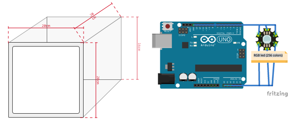

Iron lights
By Luis Toledo, 2017
Assignment for the Art/Sci Narratives, following a methodology proposed by Fabricio Lamoncha, at the Interface Cultures Master by the Kunstuniversität Linz.
Subject selection
Four months ago I came to Linz as an Erasmus student. Coming from a bigger city, I soon noticed and enjoy the closeness of nature and how fast you can go out of the urban space.
From a student dormitory, my room's window at the 8th floor heads to south-west; not towards the river, not to Pöstlingberg, neither to Freinberg, but towards the industrial zone of Linz, the less natural view I can get.
Soon my appraisement changes when one sleepless night, I watch trough that same window a big reddish light illuminating two well defined columns of white smoke for a couple of seconds. An amusement, that still enjoy every time I catch the spectacle in the horizon until the sunrise.
Observation
For a couple of nights, while working on my desk, I take pictures from the window, trying to register the discover all of the forms vapor columns analysis ligths.
Here I show the pictures as they were registered without edition to preserve the observation as it, allowing for any future analysis and prostprocesing.
I've also made a minimum research about the place, the company and their intricate relationship with the city. But for now I'm only documenting data about regarding an overt observation.
Analysis
From the photo files I register the timestamp and characteristics: amount of columns, if there is ligth, their intensity and tone.
For this analysis, I take the original photos and preprocess them (resize, color palette reduction to 64 colors and transform to png fileformat using an imagemagik script), later with a processing sketch to extract this data into a spreadsheet; registering color code, hue, saturation, brightness, amount of pixels per color and relative percentage of the image.
Of course the data is not a strict sample for a complete statistical analysis, but will helps to identify basic patterns and extract guesses.
The following image visualizes the color palettes through time:
Representation
Living in a small city also makes my time perception to change. That feeling of time slow when nothing to do, and minutes like seconds when you must work. I. e. While working late, the lights on the horizons helps me to track the time, not with exactness but marking time passing. That will be something that I'll miss whenever I move out from that dorm.
For an initial artistic representation of this natural phenomena, I've consider a data visualization device in form of a clock.

The box, made of iron, will fade across all of the registered colors, following the pattern already analyzed.
Further work
I would like to build a physical device to photograph the horizon from an static point of view at regular intervals, mostly for obtaining an accurate data sample, but also because later that device can be use to stream the extracted colors over the internet for multiple purposes, one of them could be feed the proposed clock to mirror the Linz colors.
Also there are lots of opportunities to explore starting from the initial observation, getting deeper into their relationship with the city.